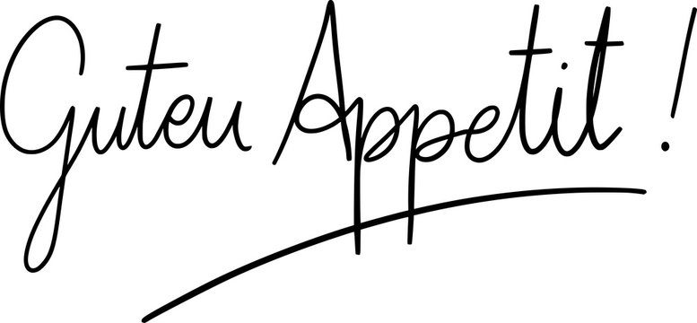

Rezepten für Deutsches Gericht
德國傳統美食 食譜集!
維也納炸豬排 Wiener Schnitzel
製作時間: 分鐘
難易度:
份量: 1 人

準備材料
- 豬里肌肉排 -1塊
- 黑胡椒 -適量
- 雞蛋 -1顆
- 果醬(視喜好) -適量
- 醬鹽(視喜好) -2匙
- 麵包粉 -2大匙
- 麵粉 -2大匙
製作步驟
- 敲打豬排，把3D的里肌肉排盡可能打成2D平面
- 撒上醬鹽和黑胡椒調味
- 豬排沾上麵粉
- 沾上蛋液
- 沾上麵包粉後靜置15分鐘，讓麵包粉確實依附在豬排上
- 熱油鍋，將豬排放入油鍋內炸至兩面金黃，完成
- 可搭配果醬食用
